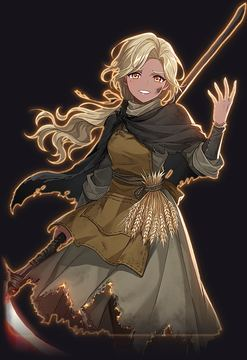
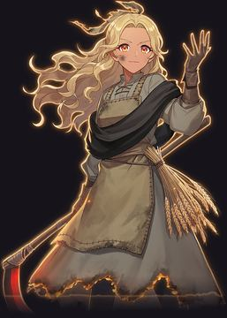

玛尔塔 焚田女巫 · 守关者（第 3 战） · b1_alt
「烧干净，就不会再长出魔蚀。……也不会再长出麦子。」
宣言：火烧过的地方，魔蚀就吃不到。
人设
魔蚀落下之前，荒原是王城的粮仓，她是粮仓最大一片麦田的主人；那个会用火魔法烤面包的术士格雷戈尔，烤的就是她的麦子。那一世，魔蚀来得太快，格雷戈尔还没来得及伸手，就先被吞了进去。她没学会吞下魔蚀，只会烧——她点燃了自己的麦田，一块一块，把魔蚀连同麦子一起烧成焦土，一直赶到荒原尽头。烧过的土，魔蚀吃不进去，也再长不出东西。她守在焦土的边上，割下每一个往上走的人身上沾的魔蚀；割不干净，就连人一起烧。
和本世「格雷戈尔」的关系
格雷戈尔烤面包，用的是她的麦。一个吞下魔蚀，一个烧掉魔蚀——同一片荒原的两种活法。两个世界里，他们只留下一个：格雷戈尔那一世，魔蚀第一夜最先吞掉的就是她和她的麦田，他伸出手，正是因为看见了那一幕；这一世，先被吞掉的是他。
残卷
- 壹那一世，魔蚀落下时，格雷戈尔没来得及伸手。伸手的人没有了，荒原便交到了一个种麦子的人手上。
- 贰她不会吞魔蚀，只会烧。她点燃了自己的麦田，一块一块，把魔蚀赶到了荒原尽头。
- 叁烧过的土，魔蚀吃不进去，也再长不出麦子。她守着一片焦土，像守着一座空粮仓。
- 肆她的镰刀是烧红的。割下来的不是麦穗，是登天者身上的魔蚀——割不干净，就连人一起烧。
- 伍焦土正中，她留了一小块没烧的地，种着一株活不长的麦子。她说，等一个会烤面包的人回来收。
心愿
想再吃一口格雷戈尔烤的面包。从前是她的麦、他的火；如今麦和火都在她手里，她却怎么也烤不出那个味道。
钩子（指向下一关，两条时间线都成立）
沉下去的城，还没有沉到底。有人在替它记着每一个名字。
战斗台词（↳ 是 alt 句）
| 登场 | 「站住。你身上，有魔蚀的味道。」 ↳ 「站住。……这味道，我好像闻过。」重逢 「这片荒原，我已经烧过一遍了。」 ↳ 「麦田烧完了，荒原上还剩一个你。」 「别怕——烧干净，就不疼了。」 ↳ 「别怕。上一次，你也没来得及疼。」多世 |
|---|---|
| 残血 | 「火……在往回烧。」 ↳ 「火……认得你的手。」重逢 「麦子……我的麦子还没收……」 ↳ 「那株麦子……别踩到它……」 |
| 被击败 | 「灰落下来了……像那年的雪。」 ↳ 「灰又落了一次……每回都是你让它落的。」曾败 「往上走吧……替我看看，哪里还长着麦子。」 ↳ 「你又要往上走了？……替我看看，上面有没有麦子。」曾败 |
| 胜利 | 「烧干净了。睡吧。」 ↳ 「睡吧。下一次醒来，我再烧一遍。」 「来年……这里也不会再长出什么了。」 ↳ 「焦土上，又多了一道你的影子。」多世 |
守关规则联想（只作风味，不使用：规则仍从致命魔法池随机）
bl_head 红元素被削弱 —— 赤王遗诏的禁火令：烧了三百年的火，先得冷下来。
备选立绘

